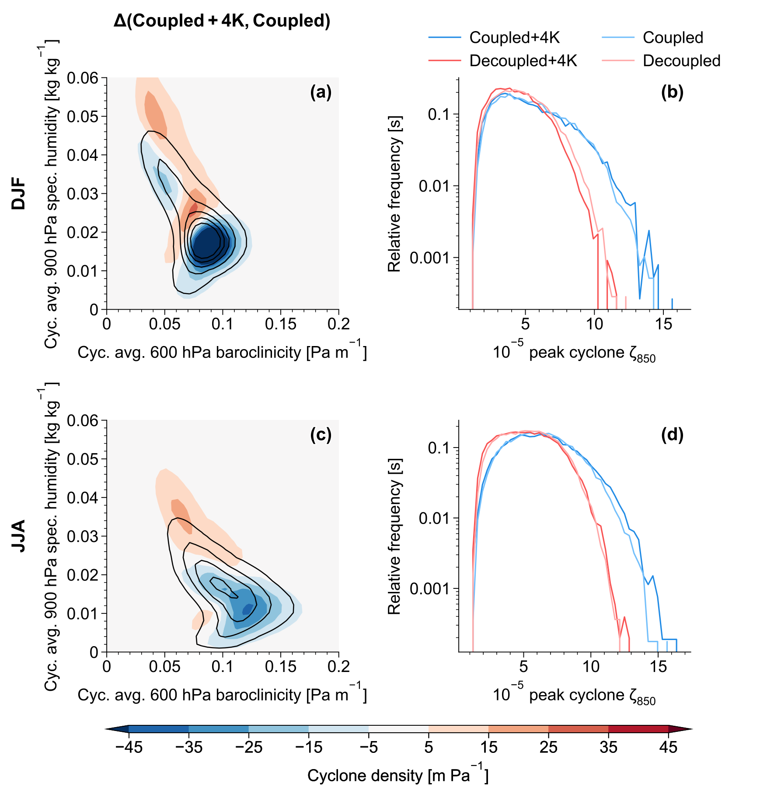

电子邮箱：henrik.auestad@physics.ox.ac.uk；henrik.stormark.auestad@gmail.com
e-mail: henrik.auestad@physics.ox.ac.uk; henrik.stormark.auestad@gmail.com
摘要
Abstract
温带风暴在将暖湿空气向极地和上方输送的过程中释放潜热。
Extratropical storms release latent heat as they transport warm, moist air poleward and upward.
这种潜热加热通过增强单个气旋以及改变风暴发展的环境条件，对风暴产生反馈，从而构成潜热加热与动力过程之间的反馈。
That latent heating feeds back on storms by intensifying individual cyclones and by altering the environmental conditions for the growth of storms, constituting a latent heating-dynamics feedback.
随着气候变暖，风暴路径中的潜热加热增强，但这种反馈在未来气候中的作用仍不明确。
As the climate warms, storm-track latent heating increases, but the role of this feedback in a future climate remains unclear.
通过大气环流模式试验，将加热与动力过程耦合形成的反馈与潜热加热的气候态变化分离，我们表明，在增暖 +4 K 的条件下，这种反馈对风暴路径的增强起主导作用。
Using atmospheric general-circulation model experiments that separate the coupled heating-dynamics feedback from climatological changes in latent heating, we show that this feedback plays a leading-order role in intensifying storm tracks under +4 K warming.
该反馈增强对流层低层的风暴强度，补偿斜压性减弱的影响；而其在对流层高层的作用具有季节性：增强夏季涡动，却抑制冬季涡动。
The feedback increases lower-tropospheric storm intensity, compensating for reduced baroclinicity, while its upper-tropospheric effect is seasonal: amplifying summer eddies but damping winter ones.
对于在湿润环境中发展的风暴而言，这种反馈至关重要；这类环境在夏季和较暖气候中很典型，突显了气候模式准确表征湿过程的必要性。
The feedback is critical for storms that grow in moist environments, typical for summer and warmer climates, underscoring the need for accurate representation of moist processes in climate models.
引言
Introduction
潜热加热，即水汽凝结时释放的热量，通常会使温带风暴比相应的干燥风暴更强[1]。
Latent heating, the heat released when water vapour condenses, tends to intensify extratropical storms relative to their dry counterparts[1].
大气增暖使大气环流中的水汽增多，预期这会导致更强的降水和潜热释放，进而可能形成更强的风暴[2]。
Atmospheric warming increases the water vapour in the atmospheric circulation, which is expected to lead to more intense precipitation and latent heat release, and thus potentially to stronger storms[2].
然而，潜热加热引起的风暴增强在多大程度上随大气温度变化，并非一个简单的问题，因为潜热加热还会改变控制风暴发展的环境条件[3,4,5]。
The extent to which the latent-heating-induced intensification of storms scales with atmospheric temperature is, however, non-trivial, because latent heating also modifies the environmental conditions that govern storm growth[3,4,5].
本文提出了一组新的模拟试验，旨在检验较暖气候下风暴路径内潜热加热的作用。
This paper presents novel simulations designed to test the role of latent heating within storm tracks in a warmer climate.
风暴路径的强度和位置通常在欧拉框架下进行诊断：对水平风施加空间或时间滤波，从而得到天气尺度涡动动能[6,7]。
The intensity and location of storm tracks are often diagnosed in an Eulerian framework by applying spatial or temporal filters to the horizontal winds to obtain the synoptic-scale eddy kinetic energy[6,7].
当暖湿、密度小的空气上升，而寒冷、密度大的空气下沉时，大气中的涡动有效位能和平均有效位能转化为天气尺度涡动动能[8]。
Synoptic-scale eddy kinetic energy is converted from atmospheric eddy and mean available potential energy as warm, moist, and light air rises and cold, dense air sinks[8].
凝结加热正在上升的暖湿空气，增加天气尺度有效位能[9,10]，并增强上升运动。
Condensation heats the ascending warm and moist air, increasing synoptic available potential energy[9,10] and enhancing ascent.
然而，预计平均有效位能会随大气水汽含量增加而减小，涡动动能也会因此减小，因为从气候态来看，潜热加热会减弱平均经向温度梯度，并增大平均静力稳定度[11,12,13,14,15]。
Nevertheless, mean available potential energy, and consequently eddy kinetic energy, is projected to decrease with increasing atmospheric moisture content because latent heating climatologically weakens the mean meridional temperature gradients and increases the mean static stability[11,12,13,14,15].
作为欧拉统计的一种替代方法，将风暴作为独立系统进行拉格朗日追踪表明，潜热加热不仅通过增强气旋内部低层的位涡来增强气旋，还会在气旋的极侧产生正的位涡倾向，从而增强深厚系统向极地的传播[16,17]。
As an alternative to Eulerian statistics, Lagrangian tracking of storms as individual features reveals that latent heating not only intensifies cyclones by strengthening lower-level potential vorticity within the cyclone, but also imposes a positive potential vorticity tendency poleward of the cyclone, thereby enhancing the poleward propagation of deep systems[16,17].
决定潜热加热如何增强并引导气旋的一个关键因素，是潜热加热相对于气旋位涡结构的精确位置。
A key factor in how latent heating intensifies and steers cyclones is its precise location relative to the cyclone’s potential vorticity structure.
因此，气候模式能否准确刻画风暴路径的强度和位置，很可能对潜热加热的表征质量十分敏感[18,19,20,21]。
Consequently, accurately capturing the intensity and position of storm tracks in climate models likely depends sensitively on how well latent heating is represented[18,19,20,21].
为检验模式中潜热加热结构的表征质量可能具有的重要性，我们关注潜热加热与环流之间的耦合，而非潜热加热的气候态变化。
To test the potential importance of how well structures of latent heating are represented in models, we focus on the coupling between latent heating and the circulation, as opposed to the climatological changes in latent heating.
通过在大气环流模式中人为解耦潜热加热，同时保留其气候态，我们专门量化动力过程与潜热加热之间的非线性耦合如何对气流本身产生反馈，并将这一效应称为潜热加热反馈[22]。
By artificially decoupling the latent heating in an atmospheric general circulation model while preserving its climatology, we specifically quantify how the nonlinear coupling between dynamics and latent heating feeds back on the flow itself, an effect we refer to as the latent heating feedback[22].
在当前气候下，这种潜热加热反馈增强对流层低层与气旋相关的涡度，促进气旋向极地传播，并增强定常波。
In the present-day climate, this latent heating feedback strengthens cyclone-associated vorticity in the lower troposphere, enhances the poleward propagation of cyclones, and amplifies stationary waves.
本文同样将潜热加热与动力过程解耦，以量化当前气候及增暖 4 K 条件下，潜热加热反馈对涡动动能和气旋强度的作用。
Here, we similarly decouple latent heating from the dynamics in order to quantify the latent heating feedback on eddy kinetic energy and cyclone intensity in both a present-day climate and under 4 K of warming.
这揭示了潜热加热与动力过程之间非线性关系的变化，对达到平衡后的风暴路径整体响应的相对贡献。
This reveals the relative contribution of the changes in the nonlinear relation between latent heating and dynamics to the full equilibrated storm track response.
此外，不能先验地保证，在大范围空间区域内汇总的涡动动能主要反映的动力过程，与拉格朗日追踪气旋所反映的动力过程相同。
Furthermore, there is no a priori guarantee that eddy kinetic energy aggregated over large spatial domains primarily reflects the same dynamics as Lagrangian-tracked cyclones.
为解决这一问题，我们结合欧拉和拉格朗日两类指标，将涡动动能的变化归因于所追踪温带气旋的强度和位置变化。
To address this, we combine both Eulerian and Lagrangian metrics and attribute changes in eddy kinetic energy to changes in the intensity and location of tracked extratropical cyclones.
结果
Results
涡动动能对潜热加热反馈的响应
Eddy kinetic energy response to the latent heating feedback
本试验设计包括使用 CAM4 进行的四组大气环流模式模拟（表 1）。
The experimental design constitutes four atmospheric general circulation model simulations, using CAM4 (Table 1).
每组模拟均运行 50 年，并舍弃作为模式调整期的第 1 年。
We run each simulation for 50 years, discarding the first year as spin-up.
对于每组模拟，我们利用经过 10 天高通滤波的水平风，按 ½(u′² + v′²) 计算涡动动能；10 天这一截止频率对应的筛选范围同时涵盖天气尺度风暴和天气尺度波动的破碎[23,24]。
For each simulation, we calculate eddy kinetic energy as ½(u′² + v′²), using the 10-day high-pass filtered horizontal winds; the 10-day cut-off frequency includes both synoptic storms and the breaking of synoptic waves[23,24].
表 1 模拟与试验设计概览
Table 1 Overview of simulations and experiment design
（a）试验 (a) Experiments | ||
|---|---|---|
名称 Name | 潜热加热 Latent heating | 海表温度指定为 Sea surface temperature prescribed to |
Coupled Coupled | 正常计算 Normal | 1995—2005 年气候态 1995–2005 climatology |
Decoupled Decoupled | 指定为 Coupled 的气候态潜热加热 Prescribed climatological latent heating from Coupled | 1995—2005 年气候态 1995–2005 climatology |
Coupled+4K Coupled+4K | 正常计算 Normal | 在 1995—2005 年气候态基础上均匀增加 4 K 1995–2005 climatology with 4 K added uniformly |
Decoupled+4K Decoupled+4K | 指定为 Coupled+4K 的气候态潜热加热 Prescribed climatological latent heating from Coupled+4K | 在 1995—2005 年气候态基础上均匀增加 4 K 1995–2005 climatology with 4 K added uniformly |
（b）比较及其解释 (b) Comparisons and interpretation | ||
名称 Name | 目的：量化…… Purpose: quantify the … | |
Δ(Coupled+4K, Coupled) Δ(Coupled+4K, Coupled) | 4 K 增暖的影响 effect of 4 K warming | |
Δ(Coupled, Decoupled) Δ(Coupled, Decoupled) | 当前气候下的潜热加热反馈效应 latent heating feedback effect in present-day climate | |
Δ(Coupled+4K, Decoupled+4K) Δ(Coupled+4K, Decoupled+4K) | 增暖 4 K 气候下的潜热加热反馈效应 latent heating feedback effect in a 4 K warmer climate | |
Δ(Coupled+4K, Decoupled+4K) − Δ(Coupled, Decoupled) Δ(Coupled+4K, Decoupled+4K) − Δ(Coupled, Decoupled) | +4 K 增暖下潜热加热反馈效应的变化 change in the latent heating feedback effect under + 4 K warming | |
Δ(⋅, ⋅) 这一命名表示用第一个参数减去第二个参数，即 Δ(x, y) = x − y。
The Δ(⋅, ⋅) naming denotes a subtraction of the second argument from the first argument, i.e., Δ(x, y) = x − y.
涡动动能对全球变暖的响应，通过以下两组模拟的差值计算：一组规定使用 1995—2005 年的气候态海表温度[25]，另一组除将海表温度均匀增加 4 K 外，其余设置完全相同。
The global-warming response in eddy kinetic energy is computed by taking the difference between a simulation with prescribed climatological sea surface temperatures from 1995-2005[25] and an identical simulation with 4 K uniformly added to the sea surface temperatures.
我们将这一差值记为 Δ(Coupled+4K, Coupled)（表 1）。
We refer to this difference as Δ(Coupled+4K, Coupled) (Table 1).
Coupled 表示潜热加热与动力过程相耦合（即不修改物理参数化方案），与后文讨论的 Decoupled 试验相对应。
Coupled refers to the fact that latent heating is coupled to the dynamics (i.e. without modifications to the physics schemes), in contrast to the Decoupled runs discussed later.
关于试验设计的详细信息，请参见方法部分以及我们此前的论文[22]。
We refer to the Methods section and our previous paper for details on the experimental design[22].
冬季涡动动能对 +4 K 增暖的响应，总体上与第六阶段耦合模式比较计划（CMIP6）中的趋势一致。
The wintertime eddy kinetic energy response to +4 K is largely consistent with the Coupled Model Intercomparison Project Phase 6 (CMIP6) trends.
在全球变暖试验 Δ(Coupled+4K, Coupled) 中，处于冬季的半球内，垂直积分涡动动能总体增强（图 1a、d）。
In the global-warming experiment, Δ(Coupled+4K, Coupled), vertically integrated eddy kinetic energy generally strengthens in the winter hemispheres (Fig. 1a, d).
南半球和北太平洋的冬季响应与 CMIP6 中的趋势一致，也可能与再分析资料中正在显现的趋势一致；但与再分析资料和 CMIP6 相比，本试验中北大西洋冬季涡动动能增加的位置偏向极地过多[26,27,28]。
The Southern Hemisphere and North Pacific winter responses are consistent with the CMIP6 trends and potentially also emerging reanalysis trends, whereas the North Atlantic winter increase in eddy kinetic energy is shifted too far poleward in our experiments compared with reanalysis and the CMIP6[26,27,28].
图 1：涡动动能对 4 K 增暖的响应：完整响应与归因于潜热加热反馈效应的响应。
Fig. 1: Eddy kinetic energy response to 4 K warming: full response and response attributed to the latent heating feedback effect.

海表温度增加 4 K 时垂直积分涡动动能的响应（填色；a、d），以及潜热加热反馈的贡献（填色；b、e）。
The response in vertically integrated eddy kinetic energy to adding 4 K to the sea surface temperatures (shading; a, d) and the contribution from the latent heating feedback (shading; b, e).
a、d 中的黑色等值线表示 Coupled 试验的垂直积分涡动动能，等值线值依次为 25、75、125、175、225、275，单位为 105 J m2。
Vertically integrated eddy kinetic energy in Coupled is shown by black contours in (a, d) for the levels: 25, 75, 125, 175, 225, 275 105 J m2.
蓝色等值线（b、d）表示 Coupled+4K 试验的垂直积分比湿，单位为 kg m2。
Vertically integrated specific humidity in Coupled+4K is shown in blue contours (b, d), with units of kg m2.
c、f 显示纬向平均后的垂直积分涡动动能。
Zonally averaged vertically integrated eddy kinetic energy is shown in (c, f).
夏季涡动动能的趋势同样与 CMIP6 的预估一致。
The summertime eddy kinetic energy trends are similarly consistent with the CMIP6 projections.
在全球变暖试验中，各区域处于当地夏季时，涡动动能在南半球向极地移动，在北太平洋向赤道移动，并在北大西洋增强（图 1a、d）。
In the respective summers, eddy kinetic energy shifts poleward in the Southern Hemisphere, equatorward in the North Pacific and strengthens in the North Atlantic in the global-warming experiment (Fig. 1a, d).
南半球夏季的涡动动能变化也与 CMIP6 中的趋势一致[29]。
The austral summer eddy kinetic energy changes are again consistent with trends in the CMIP6[29].
全球变暖试验中，北半球夏季涡动动能的区域性、纬向不对称增加，在纬向平均中被抵消。
The regional and zonally asymmetric increase in eddy kinetic energy in boreal summer in the global-warming experiment cancels in the zonal mean.
尽管北半球夏季的区域响应与再分析资料中可能存在的趋势不一致[28]，但纬向平均的净减弱似乎与 CMIP6 中的趋势一致[30]。
While the regional boreal summer responses are inconsistent with possible reanalysis trends[28], the net zonal mean weakening appears consistent with the CMIP6 trends[30].
为量化潜热加热反馈对全球变暖试验中涡动动能变化的贡献，我们将潜热加热与动力过程解耦。
To quantify the contribution from the latent heating feedback to the eddy kinetic energy changes in the global-warming experiment, we decouple latent heating from the dynamics.
具体而言，我们重复 Coupled 和 Coupled+4K 两组模拟，但将热带外自由对流层中的实时潜热加热，替换为各自对应的 Coupled 试验中的气候态潜热加热[22]。
Specifically, we repeat both the Coupled and Coupled+4K simulations, except that we replace the real-time latent heating in the extratropical free troposphere with the climatological latent heating from the respective Coupled run[22].
由此得到两组潜热加热与动力过程解耦的试验：当前气候下的 Decoupled，以及增暖 4 K 气候下的 Decoupled+4K。
This yields two runs with latent heating decoupled from the dynamics: one with a present-day climate, Decoupled, and one with a 4 K warmer climate, Decoupled+4K.
潜热加热反馈效应被量化为有别于气候态强迫的潜热加热效应。
The latent heating feedback effect is quantified as the effect of latent heating distinct from the climatological forcing.
按照试验设计，每对耦合与解耦试验在热带外自由对流层（实施解耦的区域）中具有完全相同的时间平均潜热加热。
By construction, the coupled and decoupled paired runs have identical time-mean latent heating in the extratropical free troposphere (the region of decoupling).
在解耦试验中规定潜热加热，消除了潜热加热的时间方差，从而消除了动力过程与潜热加热之间的协方差[22]。
Prescribing latent heating in the decoupled runs removes the temporal variance in latent heating and thus eliminates the covariance between the dynamics and latent heating[22].
因此，只有耦合试验允许潜热加热与天气尺度动力过程之间存在非线性相互作用，即反馈。
Consequentially, only the coupled experiments allow for nonlinear interactions, or a feedback, between latent heating and the synoptic dynamics.
通过计算 Coupled 与 Decoupled 试验之差，我们量化了当前气候和增暖 4 K 气候下的潜热加热反馈效应，并分别将其记为 Δ(Coupled, Decoupled) 和 Δ(Coupled+4K, Decoupled+4K)（表 1）。
Taking the difference between the Coupled and Decoupled experiments, we quantify the effect of the latent heating feedback in the present-day climate and in the 4 K warmer climate, which we denote by Δ(Coupled, Decoupled) and Δ(Coupled+4K, Decoupled+4K), respectively (Table 1).
随后，差值 Δ(Coupled+4K, Decoupled+4K) − Δ(Coupled, Decoupled) 给出全球变暖试验中专门由潜热加热反馈变化引起的气候变化。
The difference Δ(Coupled+4K, Decoupled+4K) − Δ(Coupled, Decoupled) then gives the change in climate specifically due to the change in the latent heating feedback in the global-warming experiment.
结果表明，潜热加热反馈的变化在全球风暴路径的变化中起主导作用。
The results show the changing latent heating feedback to play a leading order role in the global storm track changes.
在南半球夏季，潜热加热反馈几乎能够解释全球变暖试验中南半球涡动动能的全部增加，但无法解释其在副热带的减小（图 1a—c）。
In austral summer, the latent heating feedback accounts for approximately all of the increase, but not the subtropical decrease in Southern Hemispheric eddy kinetic energy in the global-warming experiment (Fig. 1a–c).
在南、北半球各自的冬季，潜热加热反馈能够解释涡动动能增加量的大约一半（图 1a—f）。
In winter in both hemispheres, the latent heating feedback explains roughly half of the increase in eddy kinetic energy (Fig. 1a–f).
北半球夏季的情况尤为突出：潜热加热反馈使涡动动能增加，但涡动动能对全球变暖的总响应在纬向平均上表现为净减弱（图 1d—f）。
The Northern Hemisphere during boreal summer stands out: there, the latent heating feedback increases eddy kinetic energy, yet the total eddy kinetic energy response to global warming is a net zonal-mean weakening (Fig. 1d–f).
这意味着，在解耦试验中，+4 K 强迫下北半球夏季的涡动动能存在抵消上述增加的减小（Δ(Decoupled+4K, Decoupled)；图未示）。
This implies that in the decoupled runs, there is a compensating decrease in eddy kinetic energy in the Northern Hemisphere in boreal summer under +4 K forcing (Δ(Decoupled+4K, Decoupled); not shown).
这可能与斜压性随增暖而减弱有关，后文将对此展开讨论。
This could be linked to baroclinicity reducing with warming, which is discussed later on.
潜热加热反馈效应在热带外有水汽可供利用的区域最强。
The latent heating feedback effect is strongest where moisture is available in the extratropics.
与总响应相比，全球变暖下涡动动能对潜热加热反馈的响应位置略偏向赤道（图 1），在处于冬季的半球中尤其如此。
The eddy kinetic energy response to the latent heating feedback under global warming is somewhat equatorward-shifted compared with the total response (Fig. 1), particularly in the winter hemispheres.
潜热加热反馈的响应通常在垂直积分比湿大于 10 kgm2 的区域最强（图 1b、e 中的蓝线）。
The latent heating feedback response is generally strongest where vertically integrated specific humidity is larger than 10 kgm2 (blue lines in Fig. 1b, e).
反馈效应集中于水汽更充足的区域，这在物理上是一致的；相较冬季，这些区域在夏季更靠近极地，且纬向分布更加对称。
It is physically consistent that the feedback effect is focused on regions where more moisture is available, which are located further poleward and are more zonally symmetric in summer than in winter.
水汽的可用性很可能解释了反馈响应位置的季节差异，而响应幅度的差异则源于对流层高层的响应，下面将对此加以展示。
While moisture availability likely explains the seasonal differences in the location of the feedback response, the difference in amplitude arises from the upper-tropospheric response, which we show next.
涡动动能响应的垂直结构
The vertical structure of the eddy kinetic energy response
在全球变暖试验中，无论南半球夏季还是冬季，纬向平均涡动动能均向上、向极地移动（图 2a、c）。
In the global-warming experiment, zonal mean eddy kinetic energy shifts upward and poleward in both summer and winter in the Southern Hemisphere (Fig. 2a, c).
在北半球，两个季节的纬向平均涡动动能也都向上移动；然而，只有在北半球冬季，涡动动能才会响应 +4 K 强迫而向极地移动（图 2a、c）。
In the Northern Hemisphere, the zonal mean eddy kinetic energy also shifts upward in both seasons, yet, eddy kinetic energy shifts poleward in response to +4 K forcing only in boreal winter (Fig. 2a, c).
图 2：纬向平均涡动动能对增暖的响应：完整响应与归因于潜热加热反馈效应的响应。
Fig. 2: Zonal mean eddy kinetic energy response to warming: full response and response attributed to the latent heating feedback effect.

填色表示海表温度增加 4 K 时纬向平均涡动动能的响应（a、c），以及海表温度增加 4 K 时纬向平均涡动动能对潜热加热反馈的响应（b、d）。
The shading shows the response in zonal mean eddy kinetic energy to adding 4 K to the sea surface temperatures (a, c) and to the latent heating feedback when adding 4 K to the sea surface temperatures (b, d).
等值线表示 Coupled 试验中的纬向平均涡动动能（a、c），等值线值为 50、100、150、200、250 J kg-1。
The contours show the zonal mean eddy kinetic energy in the Coupled run (a, c) for levels: 50, 100, 150, 200, 250 J kg-1.
在 +4 K 强迫下，潜热加热反馈的变化使处于夏季的半球对流层高层涡动动能的增加量，大于处于冬季的半球（图 2b、d）。
The change in the latent heating feedback under +4 K forcing produces a larger increase in upper-tropospheric eddy kinetic energy in the summer hemispheres than in the winter hemispheres (Fig. 2b, d).
因此，对流层高层响应的差异解释了如下现象：在 +4 K 强迫引起的涡动动能总响应中，+4 K 强迫下垂直积分涡动动能对潜热加热反馈的响应，只能解释冬季增加量的大约一半，却能解释夏季几乎全部的增加量（图 1c、f）。
Consequently, the differing upper-tropospheric response explains why the vertically integrated eddy kinetic energy response to the latent heating feedback under +4 K forcing accounts for only about half of the wintertime increase, but nearly all of the summertime increase, in the total eddy kinetic energy response to +4 K forcing (Fig. 1c, f).
为理解纬向平均涡动动能的变化，我们考察了纬向平均位温的变化；在一阶近似下，这些变化驱动大气密度的变化（图 3）。
To understand the changes in zonal mean eddy kinetic energy, we examine the changes in zonal mean potential temperature which to first order drive atmospheric density variations (Fig. 3).
关于斜压不稳定的经典涡动与平均流理论，将涡动动能的长期变化与垂直及经向密度梯度的变化联系起来，尽管瞬变涡动也会对平均态产生反馈[6,31,32]。
Classical eddy-mean-flow theory of baroclinic instability links long-term changes in eddy kinetic energy to changes in vertical and meridional density gradients, although transient eddies also feed back on the mean state[6,31,32].
随着气候变暖，热带水循环增强，极地反馈开始显现，因此对流层高层的热带空气和对流层低层的极地空气增暖最强。
As the climate warms, the upper-tropospheric tropical air and lower-tropospheric polar air warm most strongly, as the tropical water cycle amplifies and polar feedbacks emerge.
这使对流层高层的密度梯度增强、低层的密度梯度减弱；前者使涡动动能增强并向极地移动，而后者使其减弱[33]。
This produces stronger density gradients in the upper troposphere and weaker gradients in the lower troposphere; the former strengthens and shifts eddy kinetic energy poleward, whereas the latter weakens it[33].
图 3：纬向平均位温对增暖的响应：完整响应与归因于潜热加热反馈效应的响应。
Fig. 3: Zonal mean potential temperature response to warming: full response and response attributed to the latent heating feedback effect.

填色表示海表温度增加 4 K 时纬向平均位温的响应（a、c），以及海表温度增加 4 K 时纬向平均位温对潜热加热反馈的响应（b、d）。
The shading shows the response in zonal mean potential temperature to adding 4 K to the sea surface temperatures (a, c) and to the latent heating feedback when adding 4 K to the sea surface temperatures (b, d).
等值线表示 Coupled 试验中的纬向平均位温（a、c），等值线值为 230、245、260、275、290、305、320、335、350、365、380、395 K。
The contours show the zonal mean potential temperature in the Coupled run (a, c) for the levels: 230, 245, 260,275, 290, 305, 320, 335, 350, 365, 380, 395 K.
地表以下的网格点已被遮罩。
Subsurface grid points are masked.
在全球变暖试验中，对流层高层的位温梯度增强（图 3a、c），这与南半球纬向平均涡动动能总体向上、向极地移动的现象一致（图 2a、c）。
The upper-tropospheric potential temperature gradients strengthen in the global-warming experiment (Fig. 3a, c), which is consistent with the general upward and poleward shift in Southern Hemisphere zonal mean eddy kinetic energy (Fig. 2a, c).
相比之下，北半球涡动动能响应较大的季节差异，难以用纬向平均位温的响应来解释，因为后者在季节之间变化很小（图 3a、c）。
In contrast, the large seasonal difference in the Northern Hemisphere eddy kinetic energy response cannot be easily reconciled with the zonal mean potential temperature response, which vary little between the seasons (Fig. 3a, c).
由于全球变暖试验设置中保持海冰不变，这些试验中的极地放大效应应当较弱。
Polar amplification should be weak in these experiments because we hold sea ice fixed in the global-warming set-up.
极地上空的位温确实有所增加，但幅度不及热带（图 3a、c）。
Potential temperatures do increase over the poles, although not as strongly as in the tropics (Fig. 3a, c).
此外，400 hPa 以下的静力稳定度增大，减少了有效位能储量，因此应当抑制涡动动能。
Additionally, static stability increases below 400 hPa, which should mitigate eddy kinetic energy as it reduces the reservoir of available potential energy.
鉴于涡动动能响应与温度梯度响应的幅度不匹配，Δ(Coupled+4K, Decoupled+4K) − Δ(Coupled, Decoupled) 中的涡动动能响应不太可能由平均态温度梯度的变化驱动。
The eddy kinetic energy response in Δ(Coupled+4K, Decoupled+4K) − Δ(Coupled, Decoupled) is unlikely to be driven by changes in mean-state temperature gradients, given the mismatch in amplitude between the eddy kinetic energy and temperature-gradient responses.
尽管潜热加热反馈对 4 K 增暖下的涡动动能变化起主导作用（图 2），但 Δ(Coupled+4K, Decoupled+4K) − Δ(Coupled, Decoupled) 中的纬向平均位温响应，远小于 Δ(Coupled+4K, Coupled) 中的响应（图 3）。
While the latent heating feedback plays a leading order role for the eddy kinetic energy changes under 4K warming (Fig. 2), the zonal mean potential temperature response in Δ(Coupled+4K, Decoupled+4K) − Δ(Coupled, Decoupled) is much smaller than in Δ(Coupled+4K, Coupled) (Fig. 3).
这证实，该试验设计将潜热加热对涡动的直接作用的变化，与潜热加热对平均态的作用的变化分离开来。
This confirms that the experimental design isolates changes in the direct effect of latent heating on the eddies from changes in the effect of latent heating on the mean state.
考察固定气候条件下对潜热加热反馈的响应可以发现，该反馈在冬季减弱对流层高层的涡动动能，而在夏季使其增强。
Examining the response to the latent heating feedback for fixed climates reveals that the feedback weakens upper-tropospheric eddy kinetic energy in winter while it increases it in summer.
图 4 分别显示当前气候和 +4 K 气候下，纬向平均涡动动能对耦合作用响应的垂直分布。
Figure 4 shows the vertical zonal mean eddy kinetic energy response to coupling in present-day and +4 K climates, individually.
Auestad 等人所展示的、由潜热加热反馈引起的风暴路径向赤道移动，在两种气候下均可见[22]。
The equatorward storm track shift due to the latent heating feedback shown in Auestad et al. is visible in both climates[22].
在对流层低层，潜热加热反馈无论在哪个季节、哪个半球都使涡动动能增强（图 4），且该效应随增暖继续增强（图 2）。
In the lower troposphere, the latent heating feedback strengthens eddy kinetic energy irrespective of season and hemisphere (Fig. 4), and this effect continues to increase with warming (Fig. 2).
相比之下，在对流层高层，潜热加热反馈仅在夏季增强涡动动能，而在冬季使其减弱。
In the upper troposphere, in contrast, the latent heating feedback strengthens eddy kinetic energy only in summer, while it weakens eddy kinetic energy in winter.
图 4 展示的是南半球的响应，但北半球的结果类似（图未示）。
Figure 4 shows the Southern Hemispheric response, but the results are similar in the Northern Hemisphere (not shown).
图 4：当前气候和增暖 4 K 气候下，纬向平均涡动动能对耦合作用的响应。
Fig. 4: Zonal mean eddy kinetic energy response to coupling in present-day and the 4 K warmer climate.

填色表示当前气候（a、c）和 +4 K 气候（b、d）下，南半球纬向平均涡动动能对潜热加热反馈的响应。
The shading shows the response in Southern Hemisphere zonal mean eddy kinetic energy to the latent heating feedback in the present-day climate (a, c) and the +4 K climate (b, d).
等值线表示 Decoupled（a、c）和 Decoupled+4 K 试验（b、d）中的纬向平均涡动动能，等值线值为 50、100、150、200、250 J kg-1。
The contours show the zonal mean eddy kinetic energy in the Decoupled (a, c) and Decoupled+4 K runs (b, d) for levels: 50, 100, 150, 200, 250 J kg-1.
尽管潜热加热反馈在所有季节都明确增强对流层低层的涡动动能，但其对对流层高层、进而对垂直积分涡动动能的影响，具有很强的季节依赖性。
Although the latent heating feedback unambiguously strengthens lower-tropospheric eddy kinetic energy in all seasons, its effect on the upper troposphere — and therefore on vertically integrated eddy kinetic energy — is strongly seasonally dependent.
在南半球冬季，与当前气候相比，潜热加热反馈在增暖 4 K 气候下对对流层高层涡动动能的减弱作用较小（图 4c、d），从而使对流层高层涡动动能出现适度的净增加（图 2d）。
In austral winter, the latent heating feedback weakens upper-tropospheric eddy kinetic energy less in the 4 K warmer climate than in the present-day climate (Fig. 4c, d), which results in a moderate net increase in upper-tropospheric eddy kinetic energy (Fig. 2d).
在南半球夏季，潜热加热反馈在当前气候下增强对流层高层涡动动能，并在 +4 K 强迫下使其增强更多（图 4a、b），从而产生净增加（图 2b）。
In austral summer, the latent heating feedback strengthens upper-tropospheric eddy kinetic energy in present-day climate and even more with +4 K forcing(Fig. 4a, b), leading to a net increase (Fig. 2b).
在本项分析及本文其余部分中，我们主要关注南半球，因为两半球的纬向平均涡动动能及所追踪风暴对潜热加热反馈的响应非常相似（图未示）。
For this analysis and for the rest for the paper, we mainly focus on the Southern Hemisphere as the zonal mean eddy kinetic energy and tracked storm responses to the latent heating feedback are very similar in both hemispheres (not shown).
因此，南半球的结果也可应用于北半球。
The Southern Hemisphere results can therefore be transferred to the Northern Hemisphere.
在接下来的各节中，我们将涡动动能响应与所追踪风暴的变化联系起来，并更深入地考察潜热加热反馈对风暴结构和发展机制的影响。
In the next sections, we relate the eddy kinetic energy response to changes in tracked storms and more closely examine the effect of the latent heating feedback on storm structure and growth mechanisms.
潜热加热反馈对气旋的影响
The latent heating feedback effect on cyclones
涡动动能的响应反映了气旋频率和强度的变化（图 5）。
The eddy kinetic energy response reflects changes in cyclone frequency and intensity (Fig. 5).
为说明这一点，我们对每个被追踪气旋的 1.5 倍罗斯贝半径范围内的垂直积分涡动动能取平均，再将所得的气旋平均涡动动能乘以同一经纬度处每日观测到的气旋数量（详见“方法”部分）。
To demonstrate this, we average the vertically integrated eddy kinetic energy within 1.5 times the Rossby radius of each tracked cyclone, and multiply the resulting cyclone-averaged eddy kinetic energy by the daily number of observed cyclones the same longitude and latitude (see Methods section for details).
由此得到的气旋条件下的涡动动能响应，在定性上与完整的涡动动能响应相似（比较图 1 和图 5）。
The resulting cyclone-conditional eddy kinetic energy response is qualitatively similar to the full eddy kinetic energy response (compare Figs. 1 and 5).
仅凭气旋的空间分布或平均气旋涡动动能，都无法解释总涡动动能的变化（图未示）；因此，我们推断，总涡动动能的响应同时源于风暴路径的空间位移和气旋强度的变化。
Neither the spatial cyclone distribution nor the mean cyclone eddy kinetic energy alone explains the changes in total eddy kinetic energy (not shown); we therefore infer that the total eddy kinetic energy response arises from both spatial storm track shifts and changes in cyclone intensities.
图 5：归因于气旋的涡动动能对增暖的响应：完整响应及归因于潜热加热反馈效应的响应。
Fig. 5: Cyclone attributed eddy kinetic energy response to warming: full response and response attributed to the latent heating feedback effect.

气旋平均的垂直积分涡动动能对海表温度升高 4 K 的响应（色阶；a、d），以及潜热加热反馈的贡献（色阶；b、e）。
The response in cyclone-averaged vertically integrated eddy kinetic energy to adding 4 K to the sea surface temperatures (shading; a, d) and the contribution from the latent heating feedback (shading; b, e).
所有面板均显示在 5° 球冠区域内平均的气旋平均垂直积分涡动动能，并将其乘以同一 5° 球冠区域内每日观测到的特征的平均数量。
All panels show cyclone-averaged vertically integrated eddy kinetic energy averaged over 5° spherical caps and multiplied by the average number of features observed daily within the same 5° spherical caps.
黑色等值线（a、c）表示 Decoupled 实验的气候态，等值线取值与图 1 相同。
Black contours (a, c) show the Decoupled climatology for the same levels as in Fig. 1.
相应的纬向平均涡动动能（气旋平均的垂直积分量）见（c、f）。
The corresponding zonally averaged (cyclone-averaged vertically integrated) eddy kinetic energy is shown in (c, f).
图 6 展示了对南半球气旋进行合成得到的气旋平均涡动动能的垂直结构。
Figure 6 shows the vertical structure of cyclone-averaged eddy kinetic energy composited over cyclones in the Southern Hemisphere.
合成结果涵盖气旋 850 hPa 涡度达到峰值时刻的前后各三天。
The composites span the three days before and after the time of peak cyclone vorticity at 850 hPa.
在对流层低层，Coupled（a、e）、Decoupled（b、f）和 Decoupled+4（c、g）实验中的涡动动能与 850 hPa 涡度同时达到峰值，而在对流层高层，涡动动能略早达到峰值（图 6 中的黑色等值线）。
In the lower troposphere, eddy kinetic energy in the Coupled (a, e), Decoupled (b, f) and Decoupled+4 (c, g) runs peaks together with the 850 hPa vorticity, whereas in the upper troposphere eddy kinetic energy peaks slightly earlier (black contours in Fig. 6).
图 6：色阶显示对南半球气旋进行合成得到的气旋平均涡动动能对耦合及 +4 K 强迫的响应。
Fig. 6: The shading shows the response to coupling and +4 K forcing in cyclone-averaged eddy kinetic energy composited over cyclones in the Southern Hemisphere.

横轴表示气旋生命期，以被追踪气旋的 850 hPa 涡度达到峰值的时刻为中心。
The horizontal axes show cyclone lifetime, centred at the time of peak 850 hPa vorticity of the tracked cyclones.
图中分别给出对 4 K 增暖（a、e）、当前气候下耦合潜热加热（b、f）、增暖 4 K 的气候下耦合潜热加热（c、g），以及 4 K 增暖下潜热加热反馈效应变化（d、h）的响应。
Shown are the responses to 4 K warming (a, e), to coupling latent heating in present-day climate (b, f), to coupling latent heating in the 4 K warmer climate (c, g), and to the change in the latent heating feedback effect under 4 K warming (d, h).
黑色等值线表示 Coupled（a、e）、Decoupled（b、f）和 Decoupled+4K（c、g）实验中的气旋平均涡动动能，等值线取值为 50、100、150、200、250、300、350、400、450、500 J kg−1。
The black contours show the cyclone averaged eddy kinetic energy in the Coupled (a, e), Decoupled (b, f), and Decoupled+4K (c, g) runs for levels: 50, 100, 150, 200, 250, 300, 350, 400, 450, 500 Jkg−1.
对于 +4 K 强迫和耦合的响应，气旋平均涡动动能呈现出与欧拉涡动动能相似的垂直结构（图 2）。
The cyclone-averaged eddy kinetic energy reveals a vertical structure similar to the Eulerian eddy kinetic energy in response to +4 K forcing and coupling (Fig. 2).
耦合实验中的 +4 K 强迫使两个季节的气旋平均涡动动能都向上移，并使南半球冬季对流层低层的涡动动能略有增加（图 6a、e）。
Due to +4 K forcing in the coupled runs, the cyclone-averaged eddy kinetic energy shifts upwards in both seasons and increases weakly in the lower troposphere in austral winter (Fig. 6a, e).
+4 K 强迫下潜热加热反馈的变化，使两个季节整个对流层厚度内的涡动动能均略有增加，但对流层高层涡动动能在南半球夏季的增强幅度大于南半球冬季（图 6d、h）。
The change in the latent heating feedback under +4 K forcing weakly increases eddy kinetic energy throughout the depth of the troposphere in both seasons, but enhances upper-tropospheric eddy kinetic energy more strongly in austral summer than in austral winter (Fig. 6d, h).
与欧拉响应相同，在当前气候下，潜热加热反馈使两个季节对流层低层的气旋平均涡动动能均增加（图 6b、f），在 +4 K 气候下的增加更为显著（图 6c、g），因此，潜热加热反馈的变化导致对流层低层涡动动能净增加（图 6d、h）。
As in the Eulerian response, the latent heating feedback increases lower-tropospheric cyclone-averaged eddy kinetic energy in both seasons in the present-day climate (Fig. 6b, f), and even more so in the +4 K climate (Fig. 6c, g), leading to a net increase in lower-tropospheric eddy kinetic energy due to the change in the latent heating feedback (Fig. 6d, h).
潜热加热反馈的变化所引起的对流层高层气旋平均涡动动能增加，源于南半球夏季涡动动能的增强（图 6b、c），以及南半球冬季涡动动能减弱幅度的减小（图 6f、g），这同样与欧拉响应相似（图 4）。
The increase in upper-tropospheric cyclone-averaged eddy kinetic energy due to changes in the latent heating feedback arises from a strengthening of eddy kinetic energy in austral summer (Fig. 6b, c) and a reduced weakening in austral winter (Fig. 6f, g), again similar to the Eulerian response (Fig. 4).
潜热加热反馈导致的对流层低层涡动动能增加，很可能是因为潜热加热增强了气旋内部的上升运动，从而拉伸气旋性涡旋并加快其旋转[1]。
The increase in lower-tropospheric eddy kinetic energy due to the latent heating feedback likely results from latent heating enhancing ascent within cyclones, thereby stretching and spinning up the cyclonic vortex[1].
由于风暴内部的潜热加热随大气温度升高而增加，这一效应随增暖而加强是合理的，我们的实验在两个季节均显示出这一点。
As latent heating within storms increases with atmospheric temperature, it is reasonable that this effect strengthens with warming, as seen in our experiments in both seasons.
潜热加热反馈对对流层高层涡动动能的影响随季节而变化，这一点较难直观理解。
The seasonally dependent effect of the latent heating feedback on upper-tropospheric eddy kinetic energy is less intuitive.
这种季节差异可能源于：夏季潜热加热反馈在比冬季更高的高度产生涡动动能，因为气旋内部的对流在暖大气中比在冷大气中可穿透到更高的高度[34]。
The seasonal difference may stem from the latent heating feedback generating eddy kinetic energy at higher altitudes in summer than in winter, because convection within cyclones penetrates to higher levels in a warm atmosphere than in a cold atmosphere[34].
夏季对流的增强，可能抵消潜热加热反馈对对流层高层涡动动能的一般性减弱作用。
Enhanced summertime convection may offset a general weakening of upper-tropospheric eddy kinetic energy by the latent heating feedback.
潜热加热反馈对对流层高层涡动动能的减弱作用，在气旋达到峰值强度之前最强；这一效应在南半球冬季最为显著，但在南半球夏季 400 hPa 附近也可观察到（图 6b、c、f、g）。
The weakening of upper-tropospheric eddy kinetic energy due to the latent heating feedback is strongest before peak cyclone intensity, an effect which is strongest in austral winter, but can also be seen near 400 hPa in austral summer (Fig. 6b, c, f, g).
因此，这一效应似乎与典型气旋生命周期的变化有关，我们将在下文对此展开分析。
Thus, the effect seems linked to changes in the typical cyclone life cycle, which we examine next.
最后需要说明的是，图 6 面板 h 的结果对所选取的气旋子集敏感。
As a final remark, the results in panel h of Fig. 6 are sensitive to the subset of cyclones considered.
在图 6 中，我们对生命期中至少有一半时间位于 30∘ 向极一侧的所有气旋进行合成。
In Fig. 6, we composite over all cyclones that spend at least half their lifetime poleward of 30∘.
如果改为对每个冬季最强的 10 个气旋进行合成，则减弱作用会加强，使得在 +4 K 强迫下，潜热加热反馈导致对流层高层气旋平均涡动动能净减少（图未示）。
Instead, compositing the 10 strongest cyclones each winter shows that the weakening intensifies, leading to a net decrease in upper-tropospheric cyclone-averaged eddy kinetic energy due to the latent heating feedback under +4 K forcing (not shown).
这种敏感性进一步促使我们识别造成该减弱现象的物理机制。
This sensitivity further motivates identifying the physical mechanism responsible for the weakening.
潜热加热反馈对气旋周围槽脊的影响
The latent heating feedback effect on troughs and ridges around cyclones
为更好地理解潜热加热反馈对气旋附近对流层高层涡动动能的影响，我们聚焦于当前气候模拟，考察以气旋为中心、相对于纬向平均的 300 hPa 位涡异常合成场（图 7）。
To better understand the effect of the latent heating feedback on upper-tropospheric eddy kinetic energy in the vicinity of cyclones, we focus on the present-day simulations and examine cyclone-centred composites of 300 hPa potential vorticity anomalies relative to the zonal mean (Fig. 7).
为避免与冰盖的相互作用，我们排除了 70∘N 向极一侧的气旋；除此之外，气旋合成所包含的气旋与前文分析相同（见“方法”）。
We exclude cyclones poleward of 70∘N to avoid interactions with the ice cap; otherwise, the cyclone composite includes the same cyclones as analysed previously (see Methods).
黑色等值线表示 Decoupled 实验中各季节与南半球气旋相关的位涡异常。
The black contours show the potential vorticity anomalies associated with Southern Hemisphere cyclones in each season in the Decoupled run.
在达到峰值强度前两天，合成场呈现出相对于低层气旋随高度向西倾斜的罗斯贝波（图 7a、d）。
Two days before peak intensity, the composites exhibit a Rossby wave that tilts westward with height relative to the lower-level cyclone (Fig. 7a, d).
在峰值强度时刻，各位涡异常中心绕彼此作气旋式旋转（图 7b、e），表明发生了与造成重大影响的切断低压系统相关的气旋式罗斯贝波破碎[35]。
At peak intensity, the potential vorticity anomaly centres rotate cyclonically around each other (Fig. 7b, e), suggesting cyclonic Rossby wave breaking associated with high-impact cut-off low systems[35].
在达到峰值强度两天后，剩下一个槽，其与低层气旋大致呈垂直对齐（图 7c、f）。
Two days after peak intensity, a single trough remains approximately vertically aligned with the lower-level cyclone (Fig. 7c, f).
图 7：以南半球气旋为中心合成的 300 hPa 位涡相对于纬向平均的异常场。
Fig. 7: Cyclone centred composites of potential vorticity anomalies from the zonal mean at 300 hPa for cyclones in the Southern Hemisphere.

色阶表示 Coupled 与 Decoupled 实验之间的位涡异常差异，分别对应气旋涡度达到峰值前 2 天（a、d）、气旋涡度达到峰值时刻（b、e），以及气旋涡度达到峰值后 2 天（c、f）。
The shading shows the difference in anomalous potential vorticity between the Coupled and Decoupled runs 2 days before peak cyclone vorticity (a, d), at the time of peak cyclone vorticity (b, e), and 2 days after peak cyclone vorticity (c, f).
黑色等值线表示 Decoupled 实验中气旋上的平均位涡异常，等值线取值为 −1.8、−1.4、−1.、−0.6、−0.2、0.2、0.6、1.、1.4、1.8，单位为 10−6 m2 K s−1 kg−1。
The black contours show the mean potential vorticity anomalies on cyclones in the Decoupled run at levels: −1.8, −1.4, −1., −0.6, −0.2, 0.2, 0.6, 1., 1.4, 1.8 10−6 m2 Ks−1 kg−1.
与图 6 使用的气旋集合不同，这里排除了 70∘ S 向极一侧的气旋，因为冰盖会使这些气旋的位涡出现伪值。
Differing from the set of cyclones used for Fig. 6, we here leave out cyclones poleward of 70∘ S, for which the ice cap causes spurious values of potential vorticity.
与 Decoupled 实验相比，在 Coupled 实验中，气旋达到峰值强度之前所对应的对流层高层波动较弱（图 7a、d 中的色阶）。
In the Coupled run, cyclones are associated with weaker upper-tropospheric waves prior to peak intensity than in the Decoupled run (shading in Fig. 7a, d).
潜热加热对斜压波自下而上的发展十分重要[36]；因此，与 Decoupled 合成相比，Coupled 气旋合成所包含的波动，平均而言很可能较少依赖对流层高层扰动。
Latent heating is important for baroclinic waves to develop bottom up[36]; thus, the Coupled cyclone composite likely contains waves that, on average, depend less on an upper-tropospheric disturbance than the Decoupled composite.
这一解释与耦合使气旋达到峰值强度之前的对流层高层涡动动能减少相一致（图 6b、c、f、g）。
This interpretation is consistent with coupling reducing upper-tropospheric eddy kinetic energy before peak cyclone intensity (Fig. 6b, c, f, g).
在峰值强度时刻，与 Decoupled 实验相比，Coupled 实验中气旋东侧的脊增强，而槽被“压平”（图 7b、e）。
At peak intensity, the ridge east of the cyclone is amplified and the trough ’flattened’ in the Coupled run compared to the Decoupled run (Fig. 7b, e).
增强的脊侵入以气旋为中心的槽，抑制了气旋核心上方的负位涡异常，而槽的其余部分则在西侧加深。
The amplified ridge intrudes into the trough centred on the cyclone, damping the negative potential-vorticity anomaly above the cyclone core, while the remainder of the trough deepens to the west.
这种压平现象与湿斜压不稳定产生狭窄而强烈的上升区及较宽广的下沉区相一致；相比之下，干斜压不稳定中的垂直速度更为对称[37,38]。
This flattening is consistent with moist baroclinic instability producing a narrow, intense region of ascent and broader regions of descent, in contrast to dry baroclinic instability, where vertical velocities are more symmetric[37,38].
与 Decoupled 气旋相比，Coupled 气旋在达到峰值强度两天后表现出更弱的对流层高层位涡异常（图 7c、f）。
The Coupled cyclones, compared with the Decoupled cyclones, are characterised by weaker upper-tropospheric potential-vorticity anomalies two days after peak intensity (Fig. 7c, f).
因此，在这一阶段，Coupled 实验的位涡场比 Decoupled 实验更接近纬向平均，波动性也更弱。
Thus, the potential-vorticity field in the Coupled run is closer to the zonal mean and exhibits less waviness at this stage than in the Decoupled run.
这一形态可能反映了气旋达到峰值强度之后波动耗散的增强，因为潜热加热增强高层辐散出流，进而增强脊并减弱槽[39]。
This pattern may reflect enhanced wave dissipation after cyclones reach peak intensity, as latent heating enhances upper-level divergent outflows, which amplify ridges and weaken troughs[39].
另一种可能是，Coupled 合成中的位涡异常较弱，是因为 Coupled 气旋在结构上的差异比 Decoupled 气旋更大：Coupled 气旋既可以具有湿结构，也可以具有干结构，而 Decoupled 气旋实际上全都具有干结构。
Alternatively, it is possible that the Coupled composite exhibits weaker potential vorticity anomalies because Coupled cyclones vary more in structure than Decoupled cyclones: Coupled cyclones can have either moist or dry structures, whereas Decoupled cyclones are effectively all dry.
波动性的降低与气旋达到峰值强度之后对流层高层涡动动能的减少相一致，我们在冬季观察到了这一效应（图 6f、g）。
The reduced waviness is consistent with the reduction of upper-tropospheric eddy kinetic energy after peak intensity, an effect we observe in winter (Fig. 6f, g).
综上，在整个对流层厚度内，将潜热加热与动力过程耦合，在暖季比在冷季更能有效增加涡动动能（图 4、6），这与潜热加热在夏季对垂直速度的影响大于冬季相一致[40]。
To summarise, across the full depth of the troposphere coupling latent heating to the dynamics increases eddy kinetic energy more effectively in the warm season than in the cold season (Figs. 4, 6), consistent with the larger influence of latent heating on vertical velocities in summer than in winter[40].
这种季节差异之所以产生，是因为耦合使对流层高层涡动动能减少，尤其是在冷季。
The seasonal difference arises because coupling reduces upper-tropospheric eddy kinetic energy, particularly in the cold season.
我们的位涡分析（图 7）表明，有两种机制促成了这种减少：（1）当潜热加热被耦合时，气旋形成所需的高层波动活动更少；（2）耦合增强了高层波动耗散，使气旋生命周期接近尾声时的对流层高层更加呈纬向分布、波动性更弱。
Our potential-vorticity analysis (Fig. 7) suggests two contributing mechanisms for this reduction: (1) when latent heating is coupled, less upper-level wave activity is required to form cyclones; and (2) coupling enhances upper-level wave dissipation, leaving the upper troposphere more zonal and less wavy towards the end of the cyclone lifecycle.
在暖季，对涡动的直接放大可能抵消这些效应，并使对流层高层涡动动能净增加，尤其是在气旋接近峰值强度时。
In the warm season, direct eddy amplification may offset these effects and produce a net increase in upper-tropospheric eddy kinetic energy, especially near peak cyclone intensity.
湿润和斜压环境中对流层低层气旋的增强
Lower-tropospheric cyclone intensification in moist and baroclinic environments
对流层低层的风暴强度具有最大的社会影响。
Lower-tropospheric storm intensity has the greatest societal impact.
我们已经表明，无论暖季还是冷季，也无论南半球还是北半球，潜热加热反馈都会增强对流层低层涡动动能和气旋强度，而且这一效应随大气增暖而加强。
We have shown that the latent heating feedback strengthens lower-tropospheric eddy kinetic energy and cyclone intensities in both the warm and cold seasons, and in both hemispheres, and that this effect becomes stronger as the atmosphere warms.
然而，斜压性代表温带气旋发展所依赖的位能储库，也可能随全球增暖而变化[13]。
However, baroclinicity, which represents the the reservoir of potential energy from which extratropical cyclones grow, may also change with global warming[13].
本节将表明，潜热加热反馈可以补偿风暴发展过程中斜压性的降低，并且对当前气候和 +4 K 气候下最强的对流层低层风暴的发展都至关重要。
In this section, we show that the latent heating feedback compensates for reduced baroclinicity during storm growth and is crucial for the development of the strongest lower-tropospheric storms in both the present-day and +4 K climates.
通过多变量理想化斜压生命周期实验，我们知道，在达到一定阈值之前，水汽可用性和斜压性的增加均可增强气旋强度[2,34]。
From multivariate idealised baroclinic life-cycle experiments, we know that both the availability of moisture and baroclinicity enhance cyclone intensity up to certain thresholds[2,34].
在我们的当前气候模拟中，气旋所在环境的湿度范围从干燥到湿润，同时，其斜压性范围从近似正压到斜压。
In our present-day climate simulations, cyclones exist in environments ranging from dry to moist and, simultaneously, from nearly barotropic to baroclinic.
但是，在既非常湿润、又具有强斜压性的环境中不存在气旋（图 8 中的黑色等值线；计算细节见“方法”部分）。
However, no cyclones exist in environments that are both very moist and strongly baroclinic at the same time (black contours in Fig. 8; see Methods section for details on the calculations).
我们继续分析南半球气旋，但北半球的结果也类似（图未示）。
We continue to analyse Southern Hemisphere cyclones, but the results are similar also for the Northern Hemisphere (not shown).
图 8：Coupled 和 Decoupled 实验在斜压性—水汽空间中的气旋分布与增长率。
Fig. 8: Coupled and Decoupled cyclone distribution and growth rate in baroclinicity-moisture space.

色阶表示 Coupled（a、c）和 Decoupled（b、d）实验中，气旋在由气旋平均斜压性（横轴）和比湿（纵轴）构成的空间内的增强与衰减。
The shading shows cyclone intensification and decay in the space of cyclone averaged baroclinicity (horizontal axes) and specific humidity (vertical axes) in Coupled (a, c) and Decoupled (b, d).
黑色等值线表示斜压性—水汽空间中的气旋密度，等值线取值为 100、300、500、700、900 m Pa-1。
The black contours show the cyclone density in baroclinicity-moisture space for levels: 100, 300, 500, 700, 900 m Pa-1.
这里使用了南半球的所有气旋。
Here, we use all cyclones in the Southern Hemisphere.
斜压性—水汽空间中的密度计算见“方法”部分。
See “Methods” section for the baroclinicity-moisture space density calculations.
潜热加热反馈促进气旋增强[22]。
The latent heating feedback enhances cyclone intensification[22].
在 Coupled 和 Decoupled 模拟中，气旋均在斜压性较强的环境中增强，并在斜压性较弱或十分干燥的环境中衰减（图 8 中的色阶）。
Cyclones intensify in environments of high baroclinicity and decay where baroclinicity is weaker, or where conditions are very dry, in both the Coupled and Decoupled simulations (shading in Fig. 8).
在 Coupled 实验中，气旋在斜压性较弱的湿润环境中也会增强（图 8a、c）。
In the Coupled run, cyclones also intensify in moist environments with weak baroclinicity (Fig. 8a, c).
Coupled 实验中的增强率总体高于 Decoupled 实验，差异在南半球冬季最大。
Intensification rates are generally higher in the Coupled run compared to the Decoupled run, with the largest differences in austral winter.
为考察气旋峰值强度如何随斜压性和水汽而变化，我们对气旋从生成到涡度达到峰值期间所经历的斜压性和水汽取平均。
To examine cyclone peak intensity as a function of baroclinicity and moisture, we average the baroclinicity and moisture experienced by the cyclones from the time of cyclogenesis to the time they reach peak vorticity.
图 9a、b、d、e 中的色阶表示气旋峰值涡度随其所经历的斜压性和水汽的变化。
The shading in Fig. 9a, b, d, e shows cyclone peak vorticity as a function of the experienced baroclinicity and moisture.
Coupled 实验的峰值涡度总体高于 Decoupled 实验。
Peak vorticity is overall higher in the Coupled run than in the Decoupled run.
当潜热加热与动力过程耦合时，在湿润但斜压性较弱的环境中，峰值涡度也会增强，这与这些区域内气旋增强过程的加强相一致（图 8）。
Peak vorticity is also enhanced in moist but weakly baroclinic environments when latent heating is coupled to the dynamics, consistent with the enhanced cyclone intensification in those regions (Fig. 8).
图 9：Coupled 和 Decoupled 实验在斜压性—水汽空间中的气旋分布与峰值强度。
Fig. 9: Coupled and Decoupled cyclone distribution and peak intensity in baroclinicity-moisture space.

（a、b、d、e）中的色阶表示 Coupled（a、c）和 Decoupled（b、d）实验中，气旋在由气旋平均斜压性（横轴）和比湿（纵轴）各自在气旋生成至涡度峰值期间的平均值构成的空间内的最大 850 hPa 涡度。
The shading in (a, b, d, e) shows cyclone maximum 850 hPa vorticity in the space of the mean cyclone averaged baroclinicity (horizontal axes) and specific humidity (vertical axes) from genesis to peak vorticity in Coupled (a, c) and Decoupled (b, d).
等值线表示 Coupled（a、d）和 Decoupled（b、c、e、f）实验在斜压性—水汽空间中的气旋密度，等值线取值为 10、30、50、70、90 m Pa-1。
The contours show the cyclone density in baroclinicity-moisture space in the Coupled (a, d) and Decoupled (b, c, e, f) runs for levels: 10, 30, 50, 70, 90 m Pa-1.
（c、f）中的色阶表示潜热加热反馈导致的气旋密度变化。
The shading in (c, f) shows the change in cyclone density due to the latent heating feedback.
这里使用了南半球所有在涡度达到峰值之前已存在至少 24 h 的气旋。
Here, we use all cyclones in the Southern Hemisphere that exist for at least 24 h before they reach peak vorticity.
斜压性—水汽空间中的密度计算见“方法”部分。
See “Methods” section for the baroclinicity-moisture space density calculations.
气旋在南半球冬季所经历的斜压性强于南半球夏季，而在南半球夏季所经历的水汽多于南半球冬季（图 8、9 中的黑色等值线）。
The cyclones experience more baroclinicity in austral winter than in austral summer and more moisture in austral summer than in austral winter (black contours in Figs. 8, 9).
当潜热加热与动力过程耦合时，气旋在斜压性—水汽空间中的分布从斜压性较强的环境转向更湿润的环境（图 9c、f）。
When latent heating is coupled to the dynamics, the distribution of cyclones in baroclinicity-moisture space shifts from more baroclinic towards more moist environments (Fig. 9c, f).
这可能部分与耦合情况下风暴路径向赤道方向的移动有关[22]。
This could be partly linked to the equatorward shift of storm tracks under coupling[22].
在说明潜热加热反馈如何改变气旋湿增长与斜压增长之间的平衡之后，我们现在考察这一平衡如何随 +4 K 强迫而变化。
Having shown that the latent heating feedback shifts the balance between moist and baroclinic cyclone growth, we now consider how this changes with +4 K forcing.
在全球增暖实验中，风暴变得更加湿润，而其环境的斜压性减弱（图 10a、c）。
In the global-warming experiment, storms become moister and their environment less baroclinic (Fig. 10a, c).
因此，从气旋的角度看，环境似乎以斜压性降低为代价而增湿，这与在大气环流模式中增加温度和水汽的实验结果相一致[15,41,42]。
Thus, from a cyclone perspective, the environment appears to moisten at the expense of baroclinicity, consistent with experiments increasing temperature and moisture in general circulation models[15,41,42].
图 10：随增暖而变化的斜压性—水汽空间中的气旋分布，以及所有实验中气旋峰值强度的直方图。
Fig. 10: Change in cyclone distribution in baroclinicity-moisture space with warming and histogram of peak cyclone intensities in all experiments.

（a、c）中的色阶与图 9c、f 类似，但表示的是全球增暖（+4 K）引起的斜压性—水汽空间中的气旋密度变化。
The shading in (a, c) are similar to Fig. 9c, f but showing the change in cyclone density in baroclinicity-moisture space to global warming (+4 K).
（a、c）中的等值线表示 Coupled 实验的气旋密度，等值线取值为 10、30、50、70、90 m Pa−1。
The contours in (a, c) show the cyclone density in Coupled for levels: 10, 30, 50, 70, 90 m Pa−1.
b、d 显示全部四组实验中气旋 850 hPa 峰值涡度的标准化直方图。
b, d show the standardized histogram of peak cyclone 850 hPa vorticity for all four experiments.
斜压性—水汽空间中的密度计算见“方法”部分。
See “Methods” section for the baroclinicity-moisture space density calculations.
尽管耦合时斜压性有所降低（图 9c、f），Coupled 实验中最强风暴的强度仍比 Decoupled 实验高约 20%（图 10b、d）。
Despite the reduction in baroclinicity when coupling (Fig. 9c, f), the strongest storms are about 20% more intense in the Coupled experiments than in the Decoupled experiments (Fig. 10b, d).
全球增暖强迫引起的风暴强度响应，远小于将潜热加热与动力过程解耦引起的响应。
The global-warming forcing yields a far smaller response in storm strength than decoupling latent heating from the dynamics.
然而，尽管斜压性降低，Coupled+4K 实验中的强风暴始终还是比 Coupled 实验略多一些。
Yet, there are consistently a few more strong storms in the Coupled+4K run than in the Coupled run, even though baroclinicity is reduced.
讨论
Discussion
我们通过将潜热加热与动力过程解耦，量化了潜热加热直接放大涡动这一过程对涡动动能和气旋强度的贡献。
We quantify the contribution from the direct eddy amplification of latent heating to eddy kinetic energy and cyclone intensity by decoupling latent heating from the dynamics.
通过在类似当前的气候和比其暖 4 K 的气候中进行这一操作，我们还可以评估全球增暖时潜热加热反馈效应的相对贡献。
By doing so in a climate resembling the present day and in a 4 K warmer climate, we can also assess the relative contribution from the latent heating feedback effect as the world warms.
这一设置专门检验潜热加热与动力过程之间耦合的变化所起的作用；潜热加热的气候平均变化与此不同，并非本文关注的重点。
This set-up specifically tests the role of the change in the latent heating-dynamics coupling; the climatological-mean change in latent heating is distinct from this and is not the focus of this paper.
总体而言，潜热加热反馈效应的变化在风暴路径对 +4 K 强迫的响应中起主要作用（图 1），这说明模式能否准确模拟气旋内部的湿过程十分重要[18,19,20,21]。
Overall, the change in the latent heating feedback effect plays a leading-order role in the storm track response to +4 K forcing (Fig. 1), supporting the importance of model fidelity in simulating moist processes within cyclones[18,19,20,21].
潜热加热反馈明确增强了对流层低层涡动动能和气旋涡度，而且这一效应随气候增暖而加强。
The latent heating feedback unambiguously strengthens the lower-tropospheric eddy kinetic energy and cyclone vorticity, and this effect increases as the climate warms.
无论在哪个半球，这一反馈都在夏季最为重要，此时湿润气团延伸到更高纬度（图 1b、e）。
The feedback is most important in summer, independent of hemisphere, when moist airmasses extend to higher latitudes (Fig. 1b, e).
夏季潜热加热反馈的响应是增强整个垂直气柱中的涡动动能，而这一效应在增暖下的加强，解释了全球增暖实验中涡动动能增加的大部分（图 2、4）。
In summer, the latent heating feedback response is to strengthen eddy kinetic energy throughout the vertical column, and the strengthening of this effect under warming is responsible for most of the increase in eddy kinetic energy in the global-warming experiment (Figs. 2, 4).
冬季，潜热加热反馈对总气候变化信号的贡献较小，因为这一反馈使对流层高层的涡动动能减少，但仍使对流层低层的涡动动能增加。
In winter, the contribution from the latent heating feedback to the total climate change signal is smaller, as the feedback reduces eddy kinetic energy in the upper troposphere but still increases eddy kinetic energy in the lower troposphere.
潜热加热与动力过程的耦合，使气旋对对流层高层波动强迫的依赖减弱，从而减少了对流层高层涡动动能（图 7）。
Latent heating coupled with the dynamics makes cyclones less dependent on forcing by upper-tropospheric waves, reducing the upper-tropospheric eddy kinetic energy (Fig. 7).
与冬季相比，水汽驱动的上升运动在夏季可达到更高的高度[34]，这似乎抵消了上述效应。
Moisture-driven ascent reaches higher altitudes in summer compared to winter[34], which seems to offset this effect.
与冬季气旋相比，夏季气旋也在斜压性较弱但更湿润的环境中发展（图 8）。
Summer cyclones also grow in less baroclinic but moister environments than winter cyclones (Fig. 8).
因此，潜热加热反馈对夏季气旋分布的影响很可能更大，因为相较于冬季，它在夏季是一种更重要的发展机制。
Thus, the latent heating feedback likely has a larger influence on the distribution of summer cyclones as it is a more important growth mechanism in summer than in winter.
聚焦于对流层低层的风暴强度可以发现，在给定气候下，耦合模拟中最强气旋的强度比解耦模拟高约 20%（图 10）。
Focusing on the lower tropospheric storm intensity, we see that for a fixed climate, the strongest cyclones are ~ 20% more intense in the coupled simulations compared to the decoupled simulations (Fig. 10).
对于气旋峰值强度，同一气候下耦合的影响远大于 +4 K 强迫的影响。
For cyclone peak intensities, the effect of coupling within the same climate is far larger than the effect of +4 K forcing.
在全球增暖实验中，气旋在斜压性较弱但更湿润的环境中发展（图 9、10）。
In the global warming experiment, cyclones grow in less baroclinic but moister environments (Figs. 9, 10).
尽管如此，气旋仍达到相近或更强的峰值强度，这表明湿增长的增加补偿了斜压性的降低，此前的水行星模拟已证明过这一点[41,42]。
Nevertheless, the cyclones reach similar or stronger peak intensities, which indicates that the increase in moist growth compensates for the reduction in baroclinicity, as has previously been demonstrated in aquaplanet simulations[41,42].
在本分析中，我们证明，被追踪风暴的强度和位置可以定性解释涡动动能的变化。
For this analysis, we demonstrated that eddy kinetic energy changes can be qualitatively explained by the intensity and location of tracked storms.
对于未来研究，我们认为进一步考察潜热加热对气旋结构的影响将很有价值，因为这一影响似乎与涡动动能的垂直分布有关。
For future research, we think it would be useful to further investigate the effect of latent heating on the cyclone structure as it appears relevant for the vertical distribution of eddy kinetic energy.
例如，可以通过位涡收支分析来开展这项研究。
This could be done by for example leveraging a potential vorticity budget.
方法
Methods
模式与数据
Model and data
我们使用社区大气模式第 4.0 版（CAM4）模拟潜热加热与动力过程耦合的气候（Coupled）。
We simulate the coupled latent heating climate (Coupled) using the Community Atmosphere Model 4.0 (CAM4).
该设置包含地形，并将海表温度指定为 1995—2005 年的气候态值[25]。
The setup includes topography and prescribed sea surface temperatures to a 1995–2005 climatology[25].
我们重复这一模拟，并将海表温度均匀增加 4 K，得到 Coupled+4K 模拟。
We repeat the simulation adding 4 K uniformly to the sea surface temperature for the Coupled+ 4K simulation.
所有试验的海表温度都具有季节循环；与随时间变化的海表温度相比，这会影响风暴路径的位置[43]，但这种影响在各试验中是一致的。
The sea surface temperatures have a seasonal cycle in all experiments, which influences the storm track location compared to time varying sea surface temperatures[43]; any influence is, however, consistent across our experiments.
模式采用 0.9° 的经向网格距和 1.25° 的纬向网格距，垂直方向为 26 层，使用 sigma 混合坐标。
The model has a 0.9-degree meridional and 1.25-degree zonal grid-spacing and 26 vertical levels using sigma-hybrid coordinates.
我们在 ARCHER2[44] 上采用有限体积法运行模式 50 年。
We run the model on ARCHER2[44] for 50 years using the finite volume method.
第一年作为模式调整期舍去。
The first year is discarded as spin-up.
为使潜热加热与动力过程解耦，我们重复上述两个试验，但将实时潜热加热替换为相应耦合试验的气候态月平均潜热加热[22]。
To decouple latent heating from the dynamics, we repeat the two aforementioned experiments but replace the real time latent heating with the climatological monthly mean latent heating from the corresponding coupled experiment[22].
解耦时，仅在边界层以上的热带外地区移除并替换模式中的潜热加热，以避免直接扰动哈德莱环流。
When decoupling, the model latent heating is only removed and replaced above the boundary layer and in the extratropics to avoid a direct perturbation to the Hadley circulation.
我们将热带外地区定义为：在耦合试验中，200 hPa 涡动动能的平均值大于所在半球涡动动能中位数的区域。
We define the extratropics to be where the 200 hPa eddy kinetic energy in the coupled run is on average larger than the hemispheric median eddy kinetic energy.
试验设计的全部细节见 Auestad 等[22]。
All details on the experimental design are given in Auestad et al.[22].
根据试验设计，每一对耦合与解耦试验的热带外自由对流层时间平均潜热加热和海表温度都相同。
Each coupled-decoupled pair have by construction the same time mean free-troposphere extratropical latent heating and sea surface temperatures.
由此得到表 1 所列的四个试验。
This forms the four experiments shown in Table 1.
模式输出保存为 6 小时平均值，并通过对数插值映射至 14 个气压层。
The model output is stored as six-hour averages interpolated to 14 pressure levels using logarithmic interpolation.
据此，我们计算涡动动能 ½(u′² + v′²)，其中撇号表示水平风经过 243 点 Lanczos 滤波器进行 10 天高通滤波后的分量[45]。
From this we compute eddy kinetic energy, ½(u′² + v′²), where the primes denote 10-day high-pass filtered horizontal wind using a 243 point Lanczos filter[45].
我们对涡动动能和比湿均进行密度加权的垂直积分。
We perform a density weighted vertical integral of both eddy kinetic energy and specific humidity.
气旋追踪
Cyclone tracking
我们根据每 6 小时一次的 850 hPa 涡度场识别气旋，只保留移动距离超过 1000 km、持续时间超过 2 天，且至少一半生命期位于 30°N 以北或 30°S 以南的气旋。
We identify cyclones from the six-hourly 850 hPa vorticity field, only keeping the cyclones that travel further than 1000 km, persist for more than 2 days, and spend at least half their lifetime poleward of 30∘ north or south.
识别气旋时，我们仅考虑相对涡度绝对值大于 10−5 s−1 的格点。
We only consider grid points with absolute relative vorticity greater than 10−5 s−1 to identify cyclones.
此外，我们要求气旋的完整生命期都位于 12 月至翌年 2 月，或 6—8 月之内。
Additionally, we require the complete cyclone lifetime to be within either December-February or June-August.
在使用 TRACK 算法追踪气旋之前，我们将水平风场截断至 T42，并去除小于或等于 5 的空间波数[46,47,48]。
We truncate the horizontal wind field to T42 and remove spatial wave numbers smaller than or equal to 5 before tracking the cyclones using the TRACK algorithm[46,47,48].
由于舍去了模式运行的第一年，我们对 48 个完整冬季和夏季中的气旋进行追踪。
We track cyclones on 48 complete winter and summer seasons as we discard the first modelled year.
气旋强度定义为在 850 hPa 涡度场中识别到的“特征点”处的涡度[46]。
Cyclone intensity is defined as the vorticity at the ‘feature point’ identified on the 850 hPa vorticity field[46].
我们还将气旋增长率计算为每个 6 小时时间步长内气旋涡度的变化率（Δζ850/Δt），通常采用中心有限差分，而在生成和消亡时刻则采用单边有限差分格式。
We also compute cyclone growth rates as the change in cyclone vorticity over each six-hour time step (Δζ850/Δt), using centred finite differences except at genesis and lysis, where we apply a one-sided finite-difference scheme.
气旋平均量
Cyclone mean quantities
我们对距 850 hPa 气旋中心不超过 1.5 倍罗斯贝半径的格点进行空间加权平均，计算气旋平均涡动动能、比湿和斜压性。
We compute the cyclone average eddy kinetic energy, specific humidity and baroclinicity by a spatially weighted average over grid points that fall within 1.5 times the Rossby radius of the cyclone centre at 850hPa.
我们用下式近似计算罗斯贝半径：
We approximate the Rossby radius by
其中，λcyclone 为气旋所在纬度，竖线表示取绝对值。
where λcyclone is the latitude of the cyclone and the vertical lines indicate taking the absolute value.
因此，用于计算气旋平均量的半径为 1.5 × Rd。
Thus, the radius used to calculate cyclone averaged quantities is 1.5 × Rd.
结果对该半径的具体取值不敏感。
The results are not sensitive to the exact choice of this radius.
斜压性的计算分为两步：将 600 hPa 水平位温梯度的欧几里得范数在气旋范围内取平均，再除以 500 hPa 与 700 hPa 之间垂直温度梯度的气旋平均值：
Baroclincity is computed in a two-step process, by taking the cyclone averaged euclidean norm of the horizontal potential temperature gradient at 600 hPa divided by the cyclone averaged vertical temperature gradient between 500 hPa and 700 hPa,
其中，∇p 表示在等压面上计算的水平梯度。
where ∇p is the horizontal gradient evaluated at constant pressure.
气旋计数、密度与核平均量
Cyclone counts, densities, and kernel averaged quantities
为根据气旋统计重建欧拉框架下的垂直积分涡动动能（图 5），我们首先对 5° 球冠内所有气旋的气旋平均垂直积分涡动动能取平均，球冠中心位于 1° × 1° 经纬度网格上。
To reconstruct the Eulerian vertically integrated eddy kinetic energy from cyclone statistics (Fig. 5), we first average the cyclone-averaged vertically integrated eddy kinetic energy over all cyclones that fall within 5∘ spherical caps, with centres placed on a 1∘ × 1∘ longitude-latitude grid.
为简便起见，每个球冠内的所有样本具有相同权重。
For simplicity, all samples within each spherical cap are equally weighted.
我们还统计相同球冠内的气旋个数，并将该计数缩放为每天观测到的特征个数，再将这两个量相乘。
We similarly count the number of cyclones within the same spherical caps and scale this count to represent the number of features observed per day, before multiplying the two quantities.
由于数据的时间分辨率为 6 小时，同一气旋每天最多可能被计数四次。
Because the data have six-hourly temporal resolution, the same cyclone can be counted up to four times per day.
这一缩放是人为设定的，其选取旨在使图 5 中的数值与图 1 中的数值具有可比性。
The scaling is ad hoc and chosen to yield values in Fig. 5 that are comparable to those in Fig. 1.
无论是直接统计气旋个数，还是估计这些特征的概率密度函数，例如特征密度[49]，结果都不敏感（图未示）。
The result is insensitive to whether we simply count cyclones or instead estimate the probability density function of the features, for example the feature density[49] (not shown).
球冠彼此重叠，从而使该场得到平滑。
The spherical caps overlap, which smooths the field.
我们将斜压性—水汽空间中的气旋密度（图 8—10）计算为：先统计某一椭圆内的气旋个数，再除以椭圆面积及所有椭圆内气旋个数的总和；该椭圆的两个半轴分别对应各变量标准差的一半。
We compute the cyclone density in baroclinicity-moisture space (Figs. 8–10) as the number of cyclones within an ellipse whose semi-axes correspond to half a standard deviation in each variable, divided by the area of the ellipse and by the total number of cyclones summed over all ellipses.
随后，我们对斜压性—水汽空间中相同椭圆内的气旋增长率和强度进行平均（图 8—10），每个值的权重为 1 − r/rmax，其中 r 为到椭圆中心的标准化距离，rmax 为该椭圆内这种距离的最大值。
We then average the cyclone growth rate and intensity over the cyclones found within the same ellipses in baroclinicity-moisture space (Figs. 8–10), weighting each value by 1 − r/rmax, where r is the standardised distance to the centre of the ellipse and rmax is the maximum such distance found within that ellipse.
这些椭圆密集分布，因此会使各场得到平滑。
The ellipses are densely distributed and therefore smooth the fields.
以气旋为中心的位涡合成
Cyclone centred composites of potential vorticity
我们计算埃尔特尔位涡：
We calculate Ertel potential vorticity,
其中，g 为地球上的重力加速度，f 为科里奥利参数，k 为垂直方向单位向量，u 为三维风场。
where g is the gravitational acceleration on earth, f is the Coriolis parameter, k is the vertical unit vector, and u is the three dimensional wind field.
随后，我们将位涡保守插值到以各气旋为中心、网格距为 40 km × 40 km 的笛卡尔网格上，再进行合成平均。
Potential vorticity is then conservatively interpolated to a 40 km × 40 km Cartesian grid centred on each cyclone before we average over the composites.
气旋子集
Subsets of cyclones
处理用于图 5 的气旋路径时，如果任一模拟中某格点的月平均气旋个数少于三个，我们就不对该格点进行比较。
When processing the cyclone tracks for Fig. 5, we avoid comparing grid points where there are on average less than three cyclones in each month in either simulation.
对于图 7 的位涡合成，我们剔除气旋位于 70°S 以南时的样本，因为冰盖会在这些地方产生虚假的位涡值。
For the potential vorticity composites in Fig. 7, we leave out instances of cyclones poleward of 70∘ S where the ice cap produces spurious potential vorticity values.
对于图 9 和图 10，我们计算气旋达到强度峰值之前所经历的斜压性和水汽的时间平均值。
For Figs. 9, 10, we compute the temporal mean baroclinicity and moisture experienced by the cyclones before reaching peak intensity.
为了使这一平均值具有意义，该分析仅考虑在生成 24 小时或更久之后才达到强度峰值的气旋。
For this average to be sensible, we only consider cyclones that peak 24 h or longer after genesis for this analysis.
数据可用性
Data Availability
CAM4 的描述见 Neale 等[51]，可通过 https://github.com/ESCOMP/CESM 获取[52]。
CAM4 is described by Neale et al.[51] and available via https://github.com/ESCOMP/CESM[52].
本研究所用的代码未公开，但符合条件的研究人员可向通讯作者提出合理请求，以寻求获取。
The underlying code for this study is not publicly available but may be made available to qualified researchers on reasonable request from the corresponding author.
代码可用性
Code availability
本研究所用的代码未公开，但符合条件的研究人员可向通讯作者提出合理请求，以寻求获取。
The underlying code for this study is not publicly available but may be made available to qualified researchers on reasonable request from the corresponding author.
收稿：2026 年 2 月 16 日；接受：2026 年 4 月 16 日；
Received: 16 February 2026; Accepted: 16 April 2026;
致谢
Acknowledgements
H.A. 感谢 Aker Scholarship 和 Laanekassen 的支持。
H.A. acknowledges Aker Scholarship and Laanekassen.
A.S. 和 P.C. 获得了英国研究与创新署（UKRI）在英国政府“地平线欧洲”资助保障计划下的支持（项目编号 EP/Y036123/1）。
A.S. and P.C. were supported by UK Research and Innovation (UKRI) under the UK government's Horizon Europe funding Guarantee (Grant EP/Y036123/1).
资助方未参与研究设计、数据收集、数据分析与解释，以及本稿件的撰写。
The funders played no role in study design, data collection, analysis and interpretation of data, or the writing of this manuscript.
本研究使用了英国国家超级计算服务 ARCHER2（https://www.archer2.ac.uk）以及英国协同数据分析环境 JASMIN（https://www.jasmin.ac.uk）[50]。
This work used the ARCHER2 UK National Supercomputing Service (https://www.archer2.ac.uk) and JASMIN, the UK’s collaborative data analysis environment (https://www.jasmin.ac.uk)[50].
作者信息
Author information
作者与单位
Authors and Affiliations
英国牛津，牛津大学大气、海洋与行星物理学部
Atmospheric, Oceanic and Planetary Physics, University of Oxford, Oxford, UK
Henrik Auestad 与 Tim Woollings
Henrik Auestad & Tim Woollings
英国伦敦，伦敦帝国理工学院物理系
Department of Physics, Imperial College London, London, UK
Abel Shibu 与 Paulo Ceppi
Abel Shibu & Paulo Ceppi
作者贡献
Author contributions
H.A. 运行试验，并主导分析和稿件撰写。
H.A. ran the experiments, led the analysis, and led the writing of the manuscript.
A.S. 计算气旋路径和位涡合成。
A.S. computed the cyclone tracks and the potential vorticity composites.
H.A.、P.C. 和 T.W. 参与研究构思，所有作者均参与稿件撰写。
H.A., P.C. and T.W. contributed to the conceptualisation of the study and all authors contributed to the writing of the manuscript.
通讯作者
Corresponding author
通讯及材料索取请联系 Henrik Auestad。
Correspondence and requests for materials should be addressed to Henrik Auestad.
伦理声明
Ethics declarations
利益冲突
Competing interests
作者声明不存在利益冲突。
The authors declare no competing interests.
其他信息
Additional information
重印本和许可信息见 http://www.nature.com/reprints
Reprints and permissions information is available at http://www.nature.com/reprints
出版商说明 Springer Nature 对已发表地图和机构隶属关系中的管辖权主张保持中立。
Publisher’s note Springer Nature remains neutral with regard to jurisdictional claims in published maps and institutional affiliations.
许可与署名
License and attribution
开放获取 本文依据知识共享署名 4.0 国际许可协议授权；只要适当署名原作者及来源、提供该许可协议链接，并注明是否作出修改，即可通过任何媒介或格式使用、分享、改编、分发及复制。
Open Access This article is licensed under a Creative Commons Attribution 4.0 International License, which permits use, sharing, adaptation, distribution and reproduction in any medium or format, as long as you give appropriate credit to the original author(s) and the source, provide a link to the Creative Commons licence, and indicate if changes were made.
除非材料的署名说明另有标注，本文中的图片或其他第三方材料均包含在本文的知识共享许可协议范围内。
The images or other third party material in this article are included in the article’s Creative Commons licence, unless indicated otherwise in a credit line to the material.
如果某项材料未包含在本文的知识共享许可协议范围内，且您的预期用途不属于法律法规允许的使用或超出了允许范围，则须直接取得著作权人的许可。
If material is not included in the article’s Creative Commons licence and your intended use is not permitted by statutory regulation or exceeds the permitted use, you will need to obtain permission directly from the copyright holder.
要查看该许可协议，请访问 http://creativecommons.org/licenses/by/4.0/。
To view a copy of this licence, visit http://creativecommons.org/licenses/by/4.0/.
© 作者 2026
© The Author(s) 2026